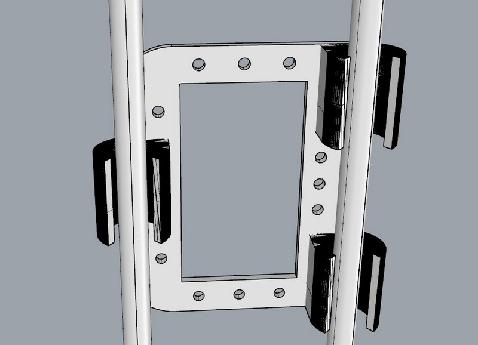
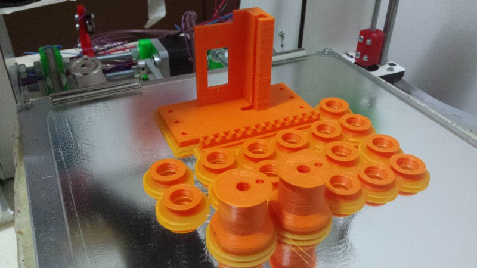

Final project - Motion System
In this section I will explain how and what I made for build the motion system of my final project
this design is concentrate to be robust, simple, easily scalable and cheap.
I start the design based on the model that I have of the structure showed in the structure design section.
I implement a core xy motion system based that grant a smooth motion and a less problem of tension of the belt or cord used, and also reduce the possibility of bad block in the axis due to the not axial traction.
HERE you can find all the information about Core XY
all the structure is studied to be 3d printed so is easy to build and you only need aluminium smooth rod buy for 2 Euro all at Leroy merlin.
This rod are not super precise but I didn't need such a precision because i have to open drawers in the middle and them are 3x4cm approx.
The structure is really oversized for the project I realize but this is made to be more efficient in large drawer shelf.

I put a lot of attention in the linear bearing because usually are the most expensive item in a motion system.
I made a lot experimentation in shape and material.
you can see the different shape i try in the photo.
After I choose the best shape ( released in the file of this section)
I try different material to 3d print this linear bearing.
I tried ABS, PLA, HIPS , crystal HIPS, PETG and a modified ABS.
I found out that:
-PLA: it have the best cost and easy to print, the external details are really good, the sliding power is good but is a soft material and will consume too fast.
-ABS: not really easy to print, requires special attention during the process, the detail are good , the strength is really good but it is more sticky to the rod.
-HIPS: like the abs mostly
-PETG: detail and easy to made like PLA, more strength but it slide really bad.
-Crystal HIPS: it is consistent like glass, non really easy to print but it gave really good detail and dimension stable, it is hard and fragile bit it have an impressive sliding power.
I used a mix of this bearing, for the small carriage ( less force involved) I use the PLA bearing, for the big carriage i use 2 different bearing made of ABS and Crystal HIPS.
I design the external shape for the 623zz bearing, so i have a space to fit the metal line i use for the traction of all the system.
This is made to make the bearing more stable and to drive the line.
The line is a metal inexpensive line coated of rubber/plastic used in jewellery, I buy it some times ago when I try to make some jewel.
I design the motor pulley following the guide of Gianluca in his project.

I adjust the work I made with the machine building assignment for the linear servo to fit my design and these are the result.
Some other machine motion photos
 Download all the file of motion system
Download all the file of motion system